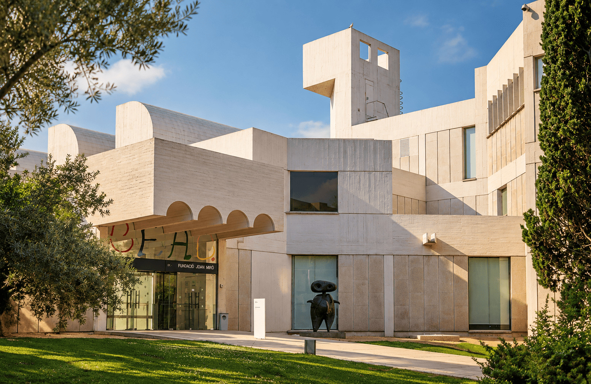
Proposal 02 · Art × future
FUNDACIÓ
JOAN MIRÓ
WHERE ART INSPIRED
WHAT'S NEXT.
Why this place
BUILT FOR ART.
READY FOR WHAT'S NEXT.
THE HUB has always been inspired by those who dared to see the world differently.
La Fundació Joan Miró nos permite descubrir Barcelona a través de uno de sus grandes referentes culturales, pero desde una perspectiva excepcional: en privado y exclusivamente para los miembros de THE HUB.
Miró rompió códigos, creó un lenguaje propio y se adelantó a su tiempo. Su manera de mirar el mundo conecta de forma natural con una comunidad de líderes que también trabaja para imaginar y construir lo que viene después.
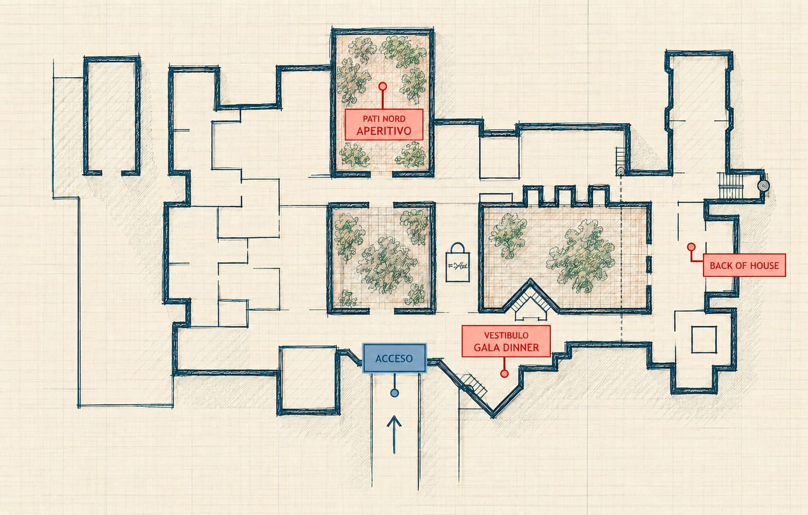
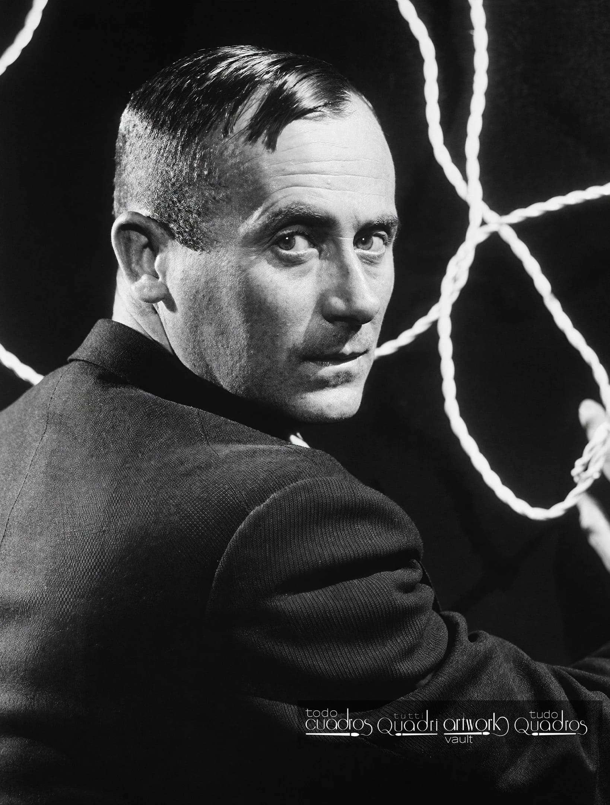
Concepto
BREAK THE
CODES.
Miró nunca aceptó los códigos establecidos. Experimentó con formas, colores y lenguajes hasta construir un universo completamente propio.
Su obra fue una fuente de inspiración para quienes sentaron las bases de THE HUB. Por eso, su presencia no es simplemente artística: forma parte de la historia de la sociedad.
Esta noche, su legado vuelve a encontrarse con personas que también cuestionan, transforman y toman decisiones sobre lo que viene después.
Arrival
YOU'VE BEEN
GRANTED ACCESS.
Tras abandonar el ritmo del MWC, los miembros ascienden hacia Montjuïc hasta llegar a la Fundació Joan Miró.
Esta noche el museo no funciona como un espacio abierto al público. Sus puertas se abren de forma excepcional para recibir exclusivamente a los miembros de THE HUB.
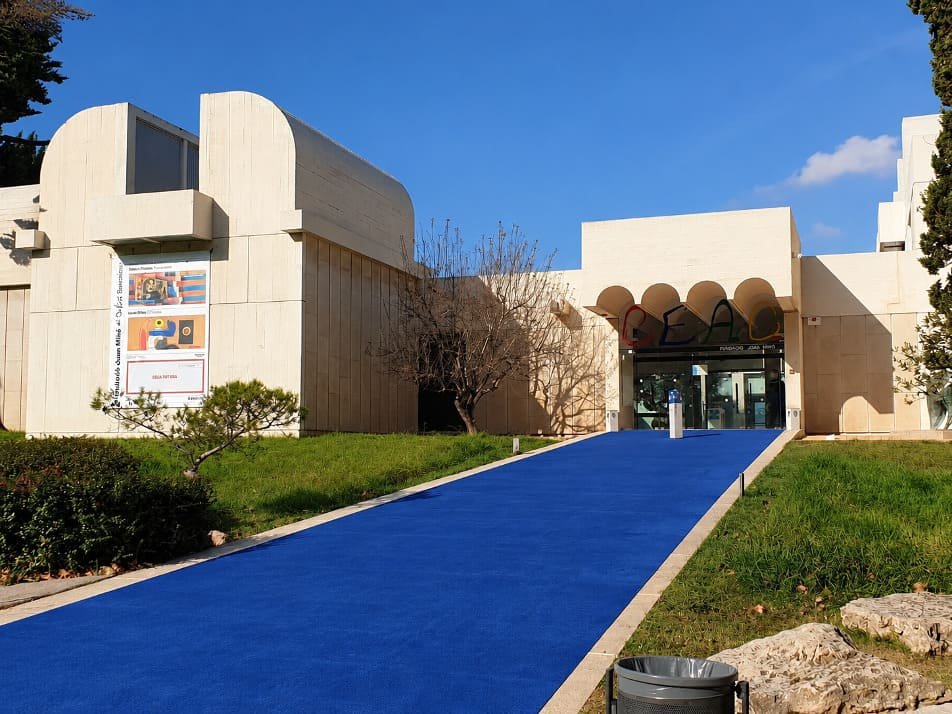
Access · Discovery
NOT A VISIT.
AN EXCLUSIVE ACCESS.
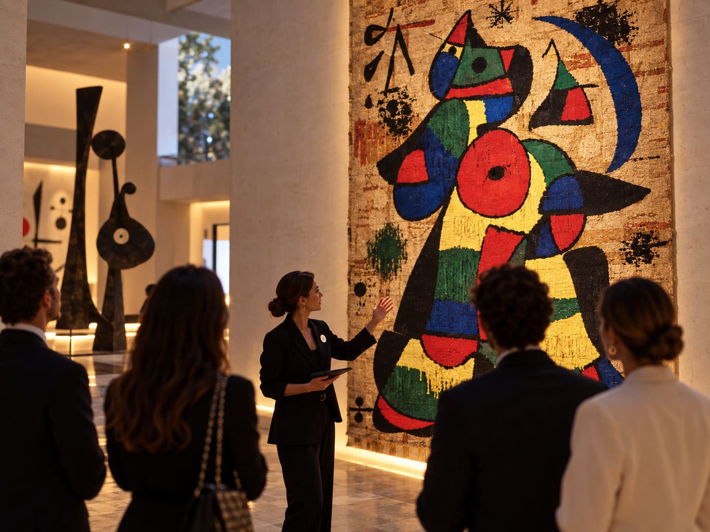
Entrar en THE HUB significa acceder a lugares, historias y perspectivas que normalmente permanecen fuera de alcance.
Tras validar su invitación, los miembros se dividen en pequeños grupos para iniciar un recorrido privado por el edificio y una selección de obras de Joan Miró.
No planteamos una visita convencional. El recorrido descubre a Miró como innovador: un creador capaz de romper con lo establecido, desarrollar un lenguaje propio y transformar la forma de entender el arte.
Welcome drink · Pati Nord
DIFFERENT PERSPECTIVES.
ONE COMMUNITY.
Después del descubrimiento, todos los caminos vuelven a encontrarse.
Los diferentes grupos llegan al Pati Nord, que se convierte en el primer gran punto de encuentro común de THE HUB.
Bebidas, música ambiente, mobiliario contemporáneo y una puesta en escena ligera crean un espacio pensado para conversar y conectar sin competir con la arquitectura.
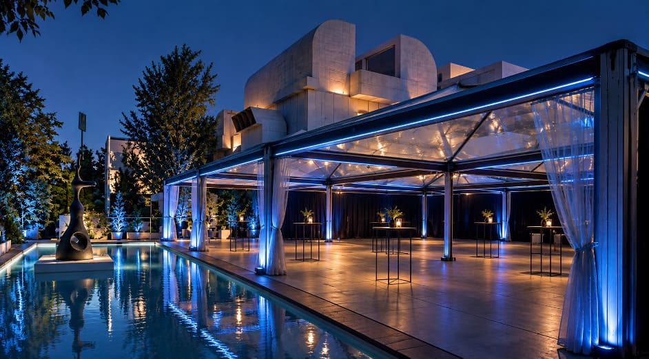
Dinner reveal · Vestíbulo
YOU'VE SEEN THE ART.
NOW EXPERIENCE IT.
Tras el aperitivo, los miembros regresan al interior. El vestíbulo que habían atravesado al llegar ya no es el mismo: THE HUB lo ha transformado para la cena.
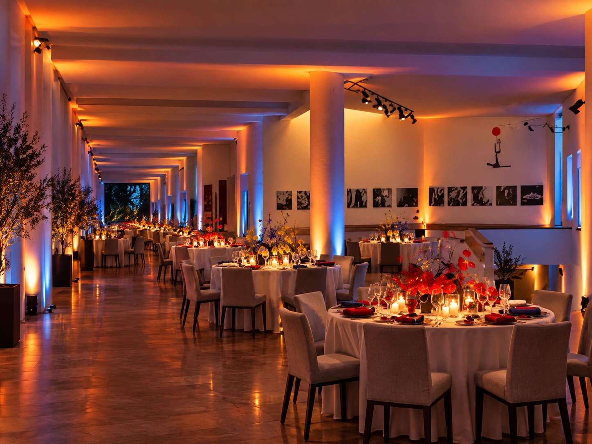
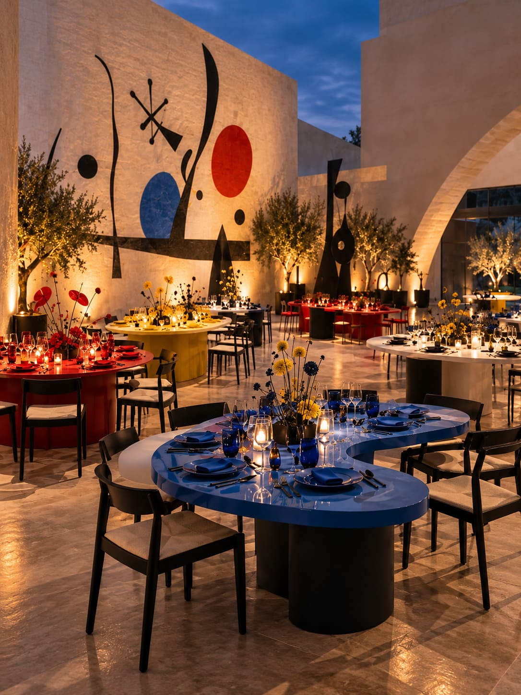
CEO moment · Pati Nord
THE MEMBERS
HAVE BEEN CALLED.
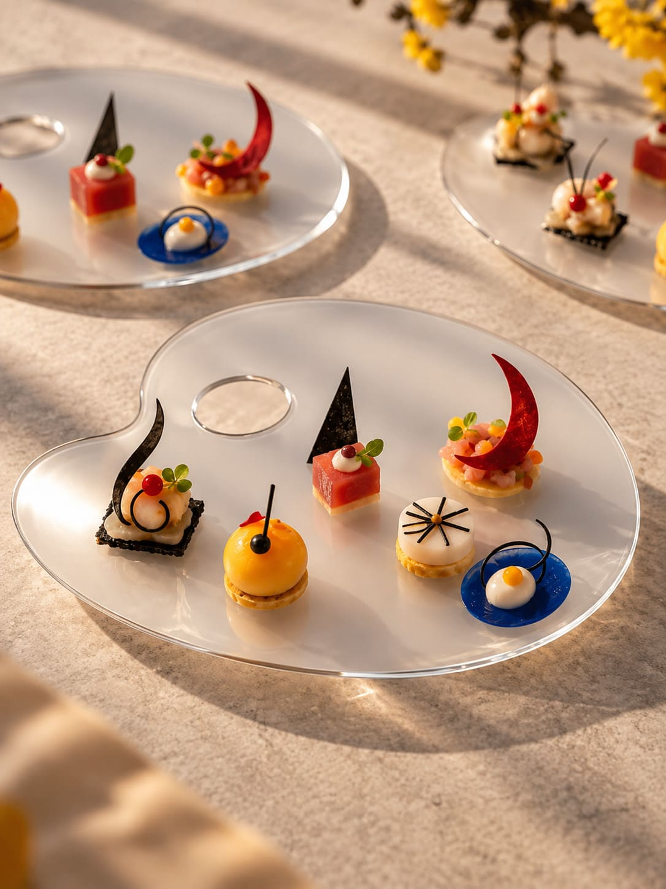
Todos los miembros están reunidos. Es el momento de revelar por qué.
En el Pati Nord, una intervención breve del CEO conecta el significado de THE HUB con la visión de NTT DATA y reúne a todos alrededor de un mismo mensaje.
Al terminar comienza el aperitivo. Los camareros aparecen con una de las sorpresas de la noche: cada miembro recibe sus bocados sobre una paleta de pintor.
Miró fue, es y seguirá siendo una fuente de inspiración para THE HUB. Esta noche, también inspira a sus chefs.
The details
ART BECOMES
PART OF THE EXPERIENCE.
El universo de Miró continúa en la mesa, la gastronomía y los pequeños detalles, siempre desde una interpretación contemporánea y evitando convertir la cena en una tematización.
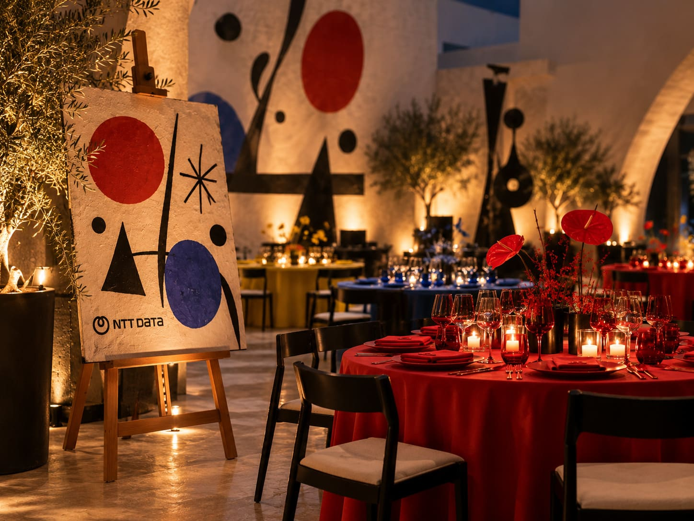
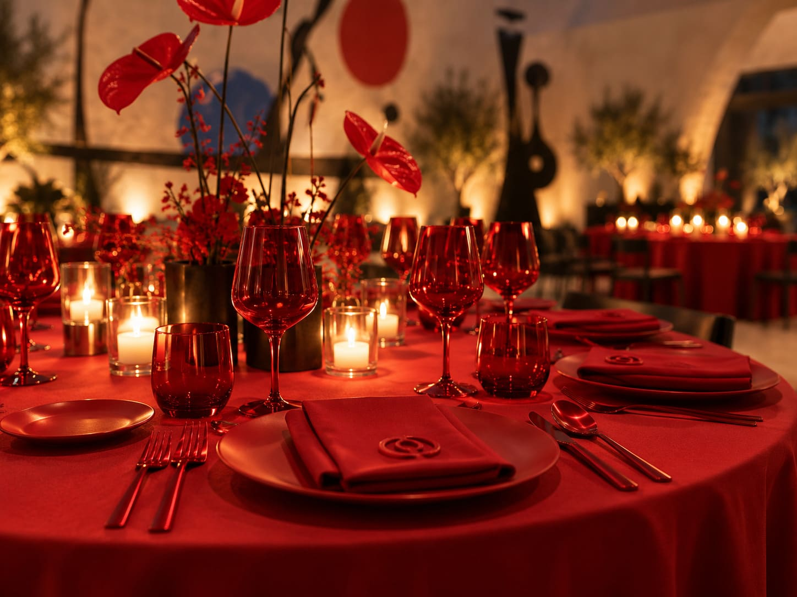
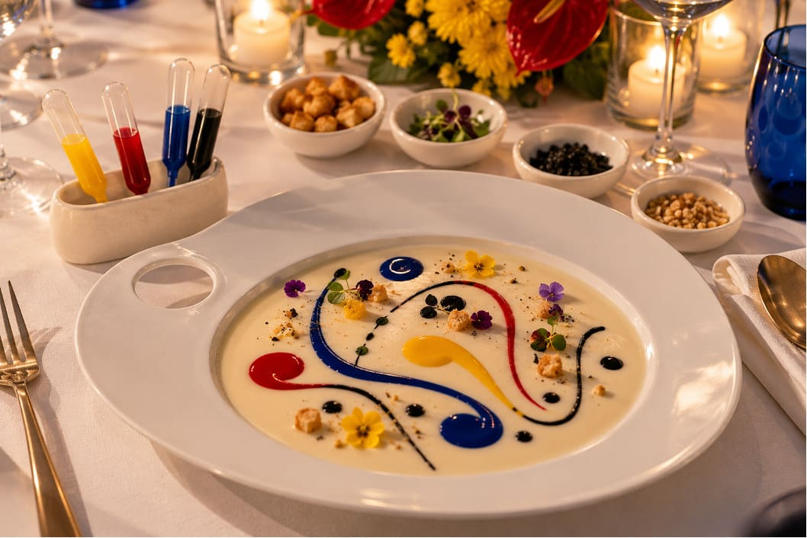